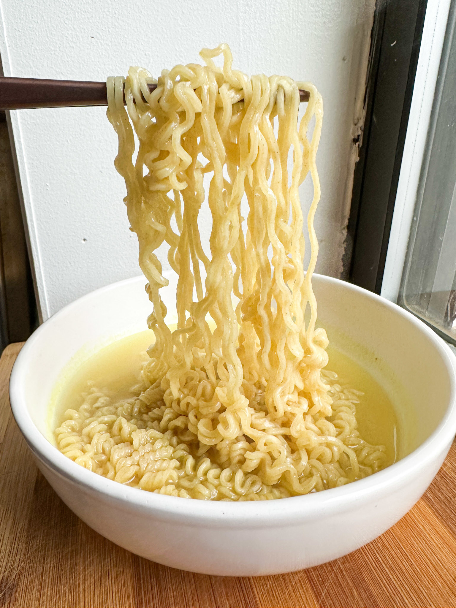

Description
Delicious as is or tossed with your favorite ingredients, Top Ramen is always a simple pleasure.
ingredients
- Water (2 cups)
- Medium Pot
- Dry Ramen
- Seasoning packet
Steps
- Boil Water
- Add dry noodles
- cook 3 mins, stirring occacionally
- Reamove from heat
- Stir in seasoning flaver packet
- Enjoy!
Return